Kho hàng — Thiết lập & cấu hình
Trích xuất từ kho-hang.html: toàn bộ nhóm "Thiết lập & cấu hình" của module Kho hàng (16 mục cấu hình).
Cấu hình hệ thống
Cấu hình hệ thống của module Kho hàng. Chọn một mục để xem hướng dẫn chi tiết.
Thiết lập kho hàng (Warehouse)
Khai báo thông tin kho: tên kho, địa chỉ và mã kho.
Các bước thực hiện
- 1Truy cập màn hình
Trên thanh menu chính, chọn phân hệ
Kho hàng, sau đó vào mụcCấu hìnhKho hàngđể xem danh sách kho hiện có (mỗi công ty thường có sẵn một kho mặc định). Bấm nútMớiở góc trên bên trái để tạo một kho mới.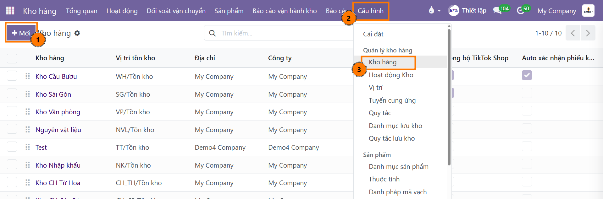
- 2Điền thông tin kho
Trường thông tin Diễn giải Kho hàng Tên kho (VD: My Company - warehouse # 11). Tên viết tắt Mã viết tắt của kho (VD: CW). Loại kho Phân loại kho. Vùng, miền Khu vực địa lý của kho. Quốc gia Quốc gia đặt kho. Địa chỉ Tỉnh/thành phố và Quận/huyện của kho. Công ty Công ty sở hữu kho. Công ty được phép Các công ty khác được phép sử dụng kho này. Được phép xuất hóa đơn điện tử Cho phép xuất hóa đơn điện tử từ kho. Kho bảo hành / Là kho tài sản / Kho hàng gợi ý / Kho ship nội thành Các thuộc tính đặc biệt của kho, tick chọn nếu áp dụng. 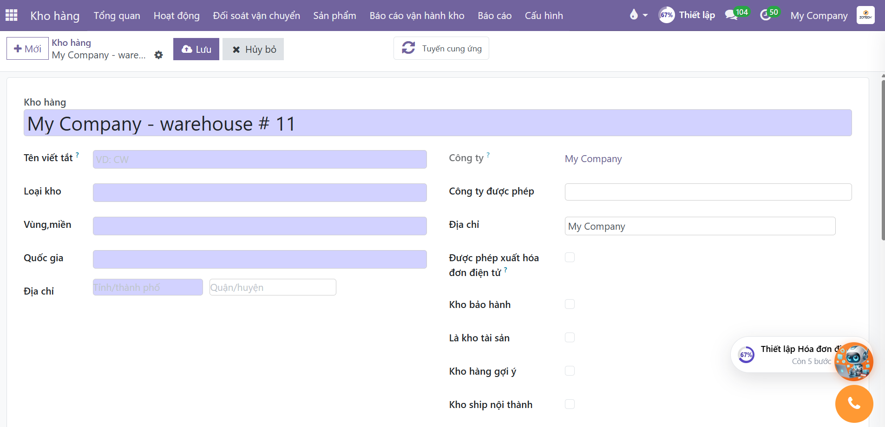
- 3Cấu hình lô hàng & tái cung ứng
Tại tab Cấu hình kho hàng:
Trường thông tin Diễn giải Lô hàng đang nhập Số bước xử lý khi nhận hàng: - Nhận hàng và lưu kho (1 bước) — nhận và lưu kho ngay.
- Nhận hàng rồi lưu kho (2 bước) — nhận hàng tại khu vực riêng, sau đó mới lưu kho.
- Nhận hàng, kiểm soát chất lượng, rồi lưu kho (3 bước) — thêm bước kiểm tra chất lượng trước khi lưu kho.
Lô hàng xuất đi Số bước xử lý khi xuất hàng cho khách: - Giao hàng (1 bước) — xuất và giao ngay.
- Lấy hàng rồi giao (2 bước) — lấy hàng từ vị trí lưu trữ trước, sau đó mới giao.
- Lấy hàng, đóng gói, rồi giao (3 bước) — lấy hàng, đóng gói riêng, rồi mới giao.
Mua để tái cung ứng / Sản xuất để tái cung ứng Cho phép tái cung ứng bằng mua hàng hoặc sản xuất. Sản xuất Số bước quy trình sản xuất: Sản xuất (1 bước) / Lấy thành phần và sản xuất (2 bước) / Lấy thành phần, sản xuất và lưu trữ sản phẩm (3 bước). Tái cung ứng từ Chọn một hoặc nhiều kho nguồn được phép tự động điều chuyển hàng bổ sung sang kho này khi kho này thiếu hàng — hệ thống sẽ tạo phiếu điều chuyển nội bộ từ (các) kho được chọn theo quy tắc tái cung ứng đã thiết lập. 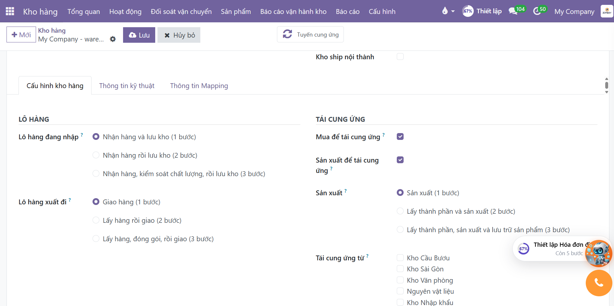
- 4Kiểm tra Thông tin kỹ thuật
Tại tab Thông tin kỹ thuật, hệ thống tự sinh các Vị trí (nhập kho, tồn kho, xuất kho...) và Hoạt động kho (loại nội bộ, loại kiểm soát chất lượng...) tương ứng với cấu hình đã chọn ở bước 3.
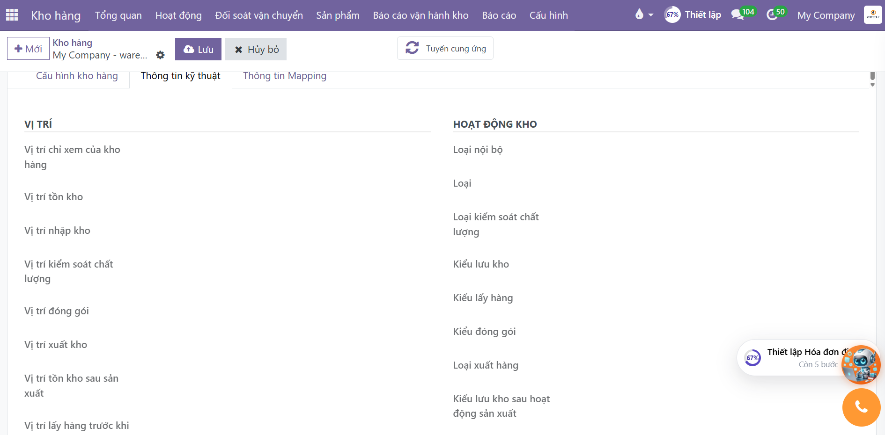
- 5Cấu hình Mapping đồng bộ sàn
Tại tab Thông tin Mapping:
Trường thông tin Diễn giải Auto xác nhận phiếu kho Tự động xác nhận phiếu kho khi phát sinh. Đồng bộ Shopee / Kho hàng sàn Shopee Bật đồng bộ và chọn kho tương ứng bên Shopee. Đồng bộ TikTok Shop / Kho hàng sàn TikTok Bật đồng bộ và chọn kho tương ứng bên TikTok Shop. 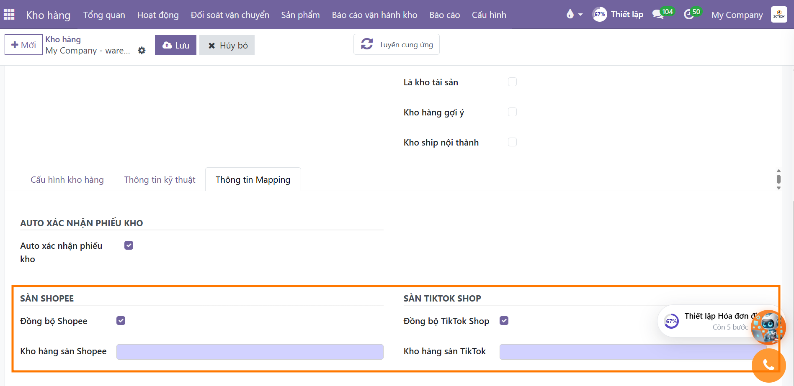
- 6
Cấu hình vị trí kho (Locations)
Thiết lập các vị trí trong kho: khu vực nhập, khu vực xuất và khu vực lưu trữ.
Các bước thực hiện
- 1
- 2Điền thông tin vị trí
Trường thông tin Diễn giải Tên vị trí Tên của vị trí (VD: Tồn kho dự phòng). Vị trí chính Vị trí cha chứa vị trí này, dùng để tổ chức cây vị trí theo cấu trúc phân cấp cha–con (VD: Vị trí thực). Loại vị trí Phân loại vai trò của vị trí trong luồng kho, quyết định cách hệ thống tính tồn kho và ghi nhận kế toán: - Vị trí nội bộ — thuộc quyền quản lý của doanh nghiệp, tính vào tồn kho hiện có.
- Vị trí đối tác — đại diện cho nhà cung cấp/khách hàng, dùng làm điểm đầu/cuối khi nhập/xuất kho.
- Vị trí ảo — không có vị trí vật lý thật, dùng cho các bút toán trung gian (VD: hàng thất lạc, hàng sản xuất).
- Vị trí giao nhận — khu vực trung chuyển tạm trong quy trình nhận/giao hàng nhiều bước.
- Chế độ xem — vị trí cha chỉ dùng để nhóm hiển thị, không chứa tồn kho trực tiếp.
Kho nhập hoàn P&L Đánh dấu vị trí dùng để ghi nhận hàng nhập hoàn có ảnh hưởng đến báo cáo lãi/lỗ (P&L) của doanh nghiệp. Vị trí kiểm kê kho Đánh dấu vị trí thuộc phạm vi được tính khi thực hiện kiểm kê định kỳ toàn kho. Cho phép tồn kho âm Khi bật, hệ thống vẫn cho xuất hàng tại vị trí này dù số lượng tồn thực tế đã về dưới 0 (dùng cho các vị trí ảo/trung gian). Danh mục lưu kho Gán vị trí vào một danh mục lưu kho để áp dụng chung các quy tắc phân loại, tìm kiếm và báo cáo. Công ty Công ty sở hữu vị trí, dùng khi hệ thống quản lý nhiều công ty (multi-company). Là một vị trí phế phẩm? Đánh dấu vị trí chuyên dùng để lưu hàng lỗi/phế phẩm, tách biệt khỏi tồn kho có thể bán được. Vị trí bổ sung hàng Đánh dấu vị trí được dùng làm nguồn trong quy trình bổ sung hàng tự động (replenishment) khi các vị trí khác thiếu hàng. Tần suất kiểm kho Số ngày giữa 2 lần kiểm kho theo chu kỳ tự động nhắc lịch (nhập 0 nếu không áp dụng kiểm kho định kỳ cho vị trí này). Lần kiểm kho cuối cùng / Dự kiến lần tiếp theo Hai mốc thời gian hệ thống tự tính và cập nhật dựa trên Tần suất kiểm kho đã thiết lập, không cần nhập tay. 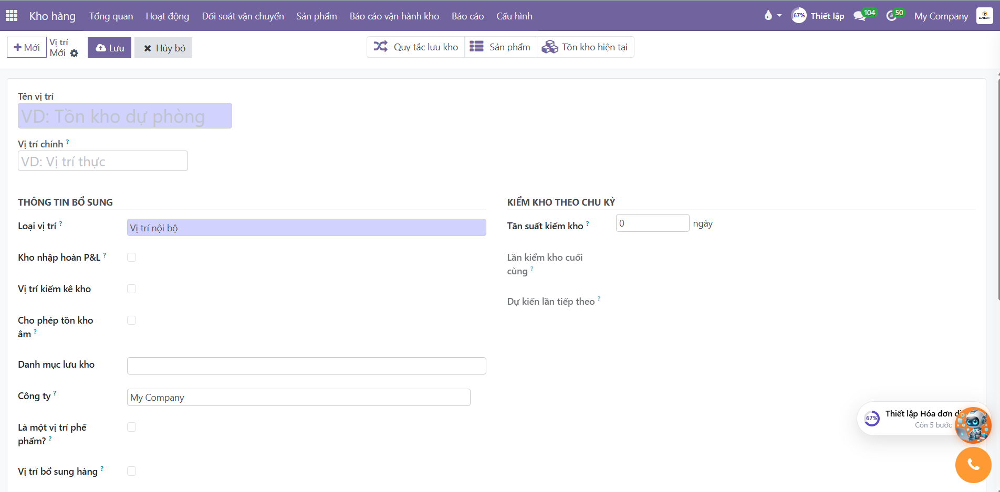
- 3Chọn chiến lược xuất kho (Logistics)
Tại mục Logistics, chọn Chiến lược xuất kho áp dụng cho vị trí:
- Nhập trước xuất trước (FIFO) — ưu tiên xuất hàng nhập kho sớm nhất.
- Nhập sau xuất trước (LIFO) — ưu tiên xuất hàng nhập kho gần nhất.
- Vị trí gần nhất — ưu tiên xuất hàng ở vị trí gần nhất trong kho.
- Kiện có ít hàng nhất — ưu tiên xuất hết các kiện tồn ít trước.
- Hết hạn trước xuất trước (FEFO) — ưu tiên xuất hàng có hạn sử dụng gần hết trước.
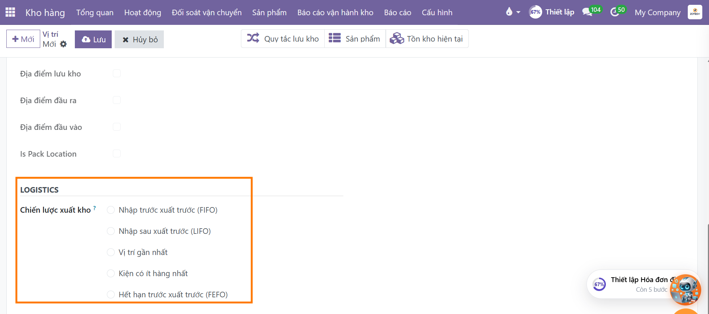
Thiết lập đơn vị tính
Khai báo đơn vị tính phục vụ quản lý kho.
Các bước thực hiện
- 1
- 2Khai báo danh mục và các đơn vị tính
Trường thông tin Diễn giải Unit of Measure Category Tên danh mục nhóm các đơn vị tính quy đổi được cho nhau (VD: Đơn vị, Khối lượng, Chiều dài/Khoảng cách). Nhóm các sản phẩm trong POS Gộp nhóm sản phẩm theo danh mục này khi hiển thị trên POS. Đơn vị tính Tên đơn vị tính cụ thể trong danh mục (VD: Cái, Ống, Bình, Hộp, Cuộn, Dozens). Loại Quan hệ quy đổi so với đơn vị gốc của danh mục: Nhỏ hơn đơn vị gốc / Lớn hơn đơn vị đo lường gốc / là đơn vị gốc (Đơn vị tham chiếu). Tỷ lệ Hệ số quy đổi giữa đơn vị này với đơn vị gốc. Đang hoạt động Bật/tắt để cho phép sử dụng đơn vị tính này. Làm tròn chính xác Độ chính xác làm tròn số lượng khi dùng đơn vị này. Bấm Thêm một dòng để khai báo thêm đơn vị tính trong danh mục, sau đó bấm
Lưu.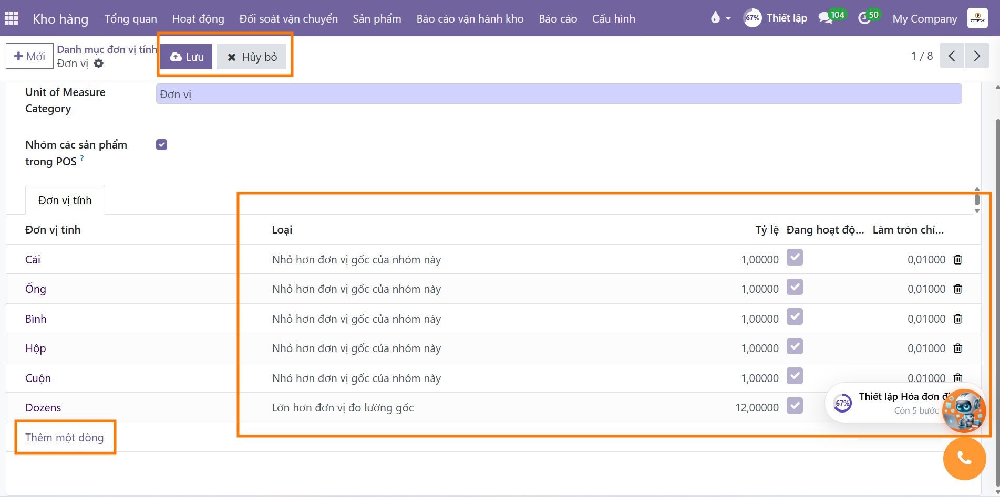
Danh mục sản phẩm
Khai báo danh mục phân loại sản phẩm phục vụ quản lý kho.
Các bước thực hiện
- 1
- 2Điền thông tin danh mục
Trường thông tin Diễn giải Danh mục Tên danh mục sản phẩm (VD: Đèn). Mã Mã định danh của danh mục. Danh mục chính Danh mục cha, dùng để tổ chức cây danh mục phân cấp. Tuyến cung ứng Tuyến cung ứng mặc định áp dụng cho sản phẩm thuộc danh mục. Bắt buộc tiến hành chiến lược xuất kho Ép áp dụng chiến lược xuất kho (FIFO/LIFO...) cho sản phẩm trong danh mục. Tài khoản thu nhập / Tài khoản chi phí / Tài khoản khoản trả trước Các tài khoản kế toán mặc định áp dụng cho sản phẩm thuộc danh mục. Phương pháp tính chi phí Cách định giá tồn kho: - Giá tiêu chuẩn — dùng một giá vốn cố định do người dùng khai báo trên sản phẩm, không thay đổi theo giá nhập thực tế.
- Nhập trước xuất trước (FIFO) — giá vốn tính theo giá của lô hàng nhập kho sớm nhất còn tồn, xuất hết lô cũ rồi mới tính đến lô mới hơn.
- Chi phí trung bình (AVCO) — giá vốn được tính lại theo bình quân gia quyền mỗi khi có lô hàng mới nhập vào.
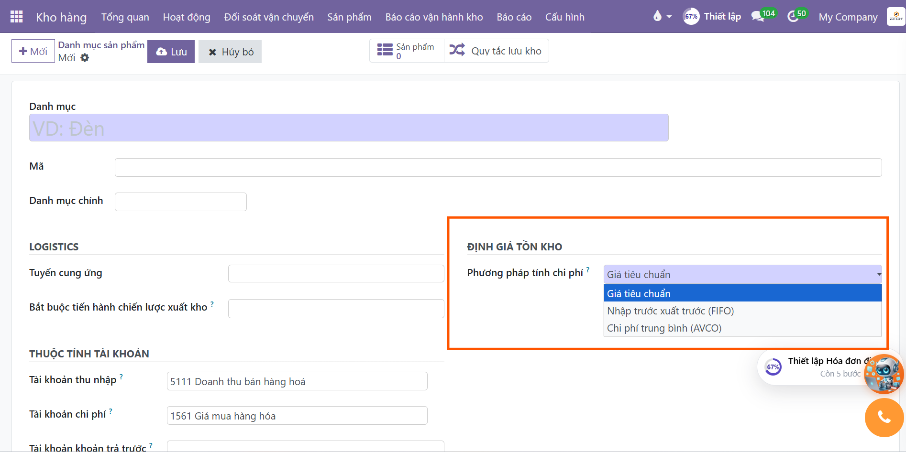
- 3
Thuộc tính
Khai báo thuộc tính sản phẩm (màu sắc, kích thước...) dùng để tạo biến thể.
Các bước thực hiện
- 1
- 2Điền thông tin thuộc tính và Giá trị thuộc tính
Trường thông tin Diễn giải Tên thuộc tính Tên thuộc tính (VD: Màu sắc, Size). Loại hiển thị Cách hiển thị giá trị thuộc tính khi chọn trên sản phẩm: - Radio — hiển thị các lựa chọn dạng nút chọn tròn.
- Viên — hiển thị dạng nhãn viên (pill).
- Chọn — hiển thị dạng dropdown.
- Màu sắc — hiển thị dạng chấm màu.
- Nhiều hộp kiểm — cho phép chọn nhiều giá trị bằng checkbox.
Tạo biến thể Thời điểm hệ thống sinh biến thể sản phẩm từ thuộc tính: - Tức thời — tạo ngay tất cả biến thể khi thêm giá trị.
- Linh động — chỉ tạo biến thể khi thực sự cần (VD: khi có đơn hàng).
- Không bao giờ — không tạo biến thể, thuộc tính chỉ mang tính mô tả.
Bộ lọc thương mại điện tử Hiển thị hoặc ẩn thuộc tính này trên bộ lọc sản phẩm ngoài trang bán hàng. Giá trị thuộc tính Danh sách các giá trị cụ thể của thuộc tính. Bấm Thêm một dòng để khai báo Giá trị, tick Văn bản tự do nếu cho phép nhập tự do, và nhập Giá bổ sung mặc định nếu giá trị này làm tăng giá sản phẩm. Bấm biểu tượng thùng rác để xóa dòng không cần dùng. 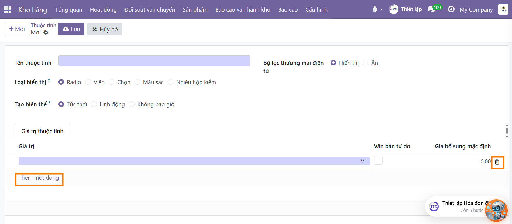
- 3
Cấu hình tuyến đường (Routes)
Thiết lập các tuyến đường luân chuyển hàng hóa: nhập kho, xuất kho và điều chuyển nội bộ.
Các bước thực hiện
- 1
- 2Điền thông tin chung và phạm vi áp dụng
Trường thông tin Diễn giải Tuyến cung ứng Tên tuyến (VD: Nhập kho hai bước). Trình tự Thứ tự ưu tiên khi có nhiều tuyến cùng áp dụng. Kho hàng được cung ứng Giới hạn tuyến chỉ áp dụng cho kho được chọn. Công ty được phép / Công ty Phạm vi công ty được áp dụng tuyến. Có thể áp dụng cho Chọn nơi tuyến này có thể được gán: - Danh mục sản phẩm
- Sản phẩm
- Phương thức vận chuyển
- Kho hàng
- Chi tiết đơn bán hàng
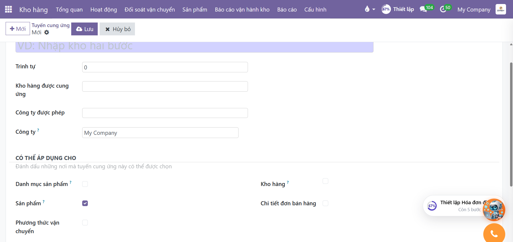
- 3
- 4Khai báo chi tiết quy tắc
Trường thông tin Diễn giải Tên Tên quy tắc. Tác vụ Cách quy tắc vận hành: - Kéo từ — khi phát sinh nhu cầu tại Vị trí đích (VD: đơn xuất cần hàng), hệ thống tự tạo hoạt động lấy hàng từ Vị trí nguồn để đáp ứng.
- Đẩy tới — ngay khi hàng vừa đến Vị trí nguồn, hệ thống tự tạo hoạt động chuyển tiếp hàng sang Vị trí đích mà không cần chờ nhu cầu.
- Đẩy và Kéo — kết hợp cả hai chiều, cho phép chuỗi tuyến nhiều chặng hoạt động cả khi có nhu cầu lẫn khi hàng vừa nhập về.
Loại hoạt động Loại hoạt động kho sẽ được sinh ra bởi quy tắc. Vị trí nguồn / Vị trí đích Vị trí lấy hàng đi và vị trí hàng cần đến. Vị trí đích xuất phát từ quy tắc Lấy vị trí đích theo quy tắc thay vì khai báo cố định. Phương thức cung ứng Cách hệ thống đáp ứng nhu cầu khi quy tắc kích hoạt: - Lấy từ tồn kho — chỉ lấy hàng có sẵn trong tồn kho tại Vị trí nguồn, không tự động mua/sản xuất thêm nếu thiếu.
- Kích hoạt một quy tắc khác — không lấy tồn kho mà luôn kích hoạt tuyến/quy tắc cung ứng tiếp theo (VD: tạo yêu cầu mua hàng hoặc lệnh sản xuất) để bổ sung hàng.
- Lấy từ tồn kho, nếu không có, kích hoạt quy tắc khác — ưu tiên xuất từ tồn kho hiện có; chỉ khi không đủ hàng mới tự động kích hoạt quy tắc bổ sung (mua/sản xuất).
Kho hàng / Công ty Phạm vi áp dụng quy tắc. Thông báo nhóm mua sắm Cách thông báo khi quy tắc kích hoạt nhu cầu mua sắm. Huỷ điều chuyển tiếp theo Huỷ các điều chuyển kế tiếp nếu điều chuyển hiện tại bị huỷ. Bấm
Lưu & Đóngđể lưu và quay lại, hoặcLưu & Tạo mớiđể tiếp tục thêm quy tắc khác.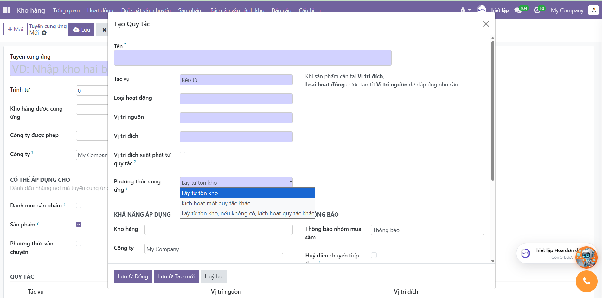
Hoạt động Kho
Khai báo các hoạt động kho: loại hoạt động, kiểu lấy hàng, kiểu đóng gói.
Các bước thực hiện
- 1
- 2Chọn loại hoạt động và điền thông tin chung
Trường thông tin Diễn giải Loại hoạt động Phân loại nghiệp vụ mà hoạt động này đại diện, quyết định luồng xử lý và vị trí nguồn/đích mặc định: - Phiếu nhập kho — nhận hàng từ nhà cung cấp vào kho.
- Giao hàng — xuất hàng ra khỏi kho cho khách/đơn bán.
- Lệnh chuyển hàng nội bộ — di chuyển hàng giữa các vị trí/kho trong nội bộ.
- Sản xuất — xuất nguyên vật liệu và nhập thành phẩm cho lệnh sản xuất.
Trình tự mã tham chiếu Mẫu đánh số tự động (sequence) mà hệ thống dùng để sinh mã tham chiếu cho từng phiếu thuộc hoạt động này, đảm bảo mã không trùng lặp và tăng dần theo thời gian. Tiền tố trình tự Chuỗi ký tự cố định gắn trước phần số của mã tham chiếu, giúp nhận diện nhanh phiếu thuộc hoạt động/kho nào (VD: WH/OUT/, WH/IN/). Kho hàng Kho cụ thể mà hoạt động này thuộc về — mỗi kho có bộ hoạt động riêng, không dùng chung giữa các kho. Công ty Công ty sở hữu hoạt động kho, dùng khi hệ thống quản lý nhiều công ty (multi-company). Hình thức trả hàng Chọn loại hoạt động sẽ được dùng để tạo phiếu trả hàng tương ứng khi người dùng thực hiện trả lại hàng liên quan đến hoạt động này (VD: hoạt động Giao hàng liên kết với hoạt động Trả hàng bán). Tạo đơn hàng tách kiện Cách hệ thống xử lý khi không đủ hàng để xuất một lần: - Tạo phiếu tách kiện (backorder) — tự động tạo thêm phiếu để xử lý phần hàng còn thiếu sau.
- Xác nhận thủ công — yêu cầu người dùng xác nhận lại mỗi lần thiếu hàng.
Hiển thị báo cáo nhập kho khi xác nhận Khi bật, ngay sau khi người dùng xác nhận phiếu, hệ thống tự động mở báo cáo nhập kho (delivery slip/receipt) để in hoặc xem ngay, không cần thao tác thêm. 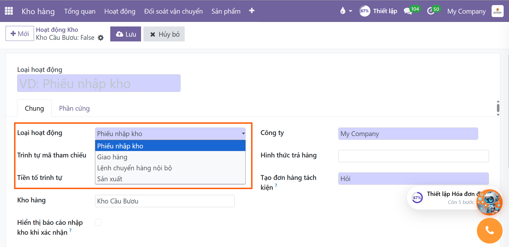
- 3Cấu hình Số lô/Sê-ri và Vị trí
Trường thông tin Diễn giải Tạo mới Cho phép người xử lý phiếu tự khai một số lô/sê-ri hoàn toàn mới ngay trong hoạt động này, thay vì bắt buộc phải khai báo trước. Sử dụng số lô/sê-ri đã tồn tại Cho phép chọn lại một số lô/sê-ri đã có sẵn trong hệ thống (đã từng nhập kho trước đó) để gán cho phiếu hiện tại. Vị trí nguồn / Vị trí đích Vị trí mặc định mà hàng được lấy đi và chuyển đến khi hoạt động thực hiện: - Vị trí nguồn — nơi hàng được lấy đi (VD: Partners/Vendors đối với phiếu nhập từ nhà cung cấp).
- Vị trí đích — nơi hàng được chuyển đến (VD: WH/Tồn kho đối với phiếu nhập vào kho).
Nhóm theo lô tự động Khi bật, nếu một sản phẩm xuất hiện ở nhiều dòng cùng số lô, hệ thống tự động gộp các dòng đó lại thành một dòng duy nhất khi xử lý phiếu, giúp màn hình xử lý gọn hơn. 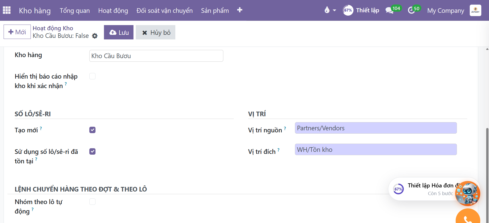
- 4Thiết lập in ấn tại tab Phần cứng
Tick chọn các chứng từ cần tự động in khi xác thực hoạt động:
- Phiếu giao hàng
- Phiếu trả hàng
- Nhãn sản phẩm
- Nhãn số lô/sê-ri
- Báo cáo nhập kho
- Nhãn báo cáo nhập kho
Sau đó bấm Lưu.
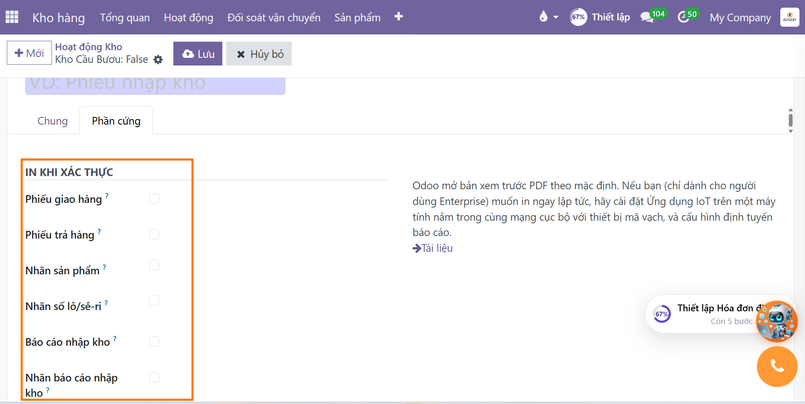
Quy tắc
Thiết lập quy tắc bổ sung / tái cung ứng hàng hóa giữa các kho.
Các bước thực hiện
- 1
- 2Điền thông tin quy tắc
Trường thông tin Diễn giải Tên Tên quy tắc. Tác vụ Cách quy tắc vận hành — khi sản phẩm cần tại Vị trí đích, Loại hoạt động được tạo từ Vị trí nguồn để đáp ứng nhu cầu: - Kéo từ — tạo hoạt động lấy hàng từ vị trí nguồn khi có nhu cầu tại vị trí đích.
- Đẩy tới — tự động chuyển hàng sang vị trí đích ngay khi hàng về vị trí nguồn.
- Mua — kích hoạt yêu cầu mua hàng để bổ sung nguồn cung.
Loại hoạt động Loại hoạt động kho sẽ được sinh ra bởi quy tắc. Vị trí nguồn / Vị trí đích Vị trí lấy hàng đi và vị trí hàng cần đến (VD: WH/Đầu vào → WH/Tồn kho). Vị trí đích xuất phát từ quy tắc Lấy vị trí đích theo quy tắc thay vì khai báo cố định. Phương thức cung ứng Cách hệ thống đáp ứng nhu cầu khi quy tắc kích hoạt (VD: Lấy từ tồn kho). 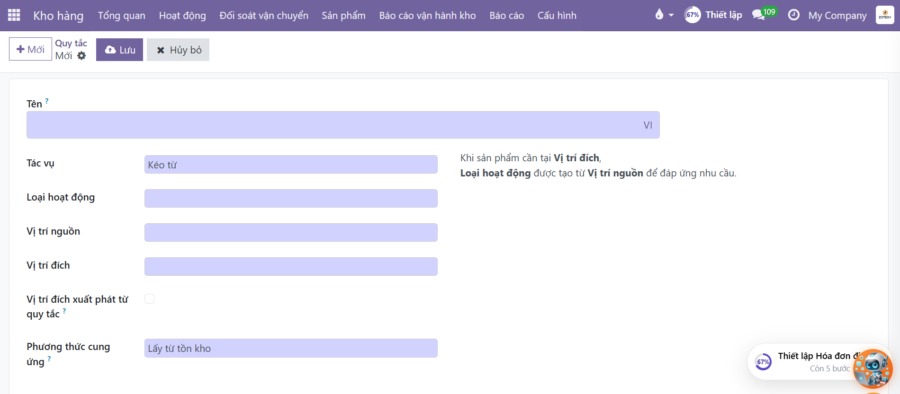
- 3Thiết lập Khả năng áp dụng & Thông báo
Trường thông tin Diễn giải Tuyến cung ứng Tuyến cung ứng mà quy tắc này thuộc về. Kho hàng / Công ty Phạm vi áp dụng quy tắc. Trình tự Thứ tự ưu tiên khi có nhiều quy tắc cùng áp dụng. Thông báo nhóm mua sắm Cách thông báo khi quy tắc kích hoạt nhu cầu mua sắm. Huỷ điều chuyển tiếp theo Huỷ các điều chuyển kế tiếp nếu điều chuyển hiện tại bị huỷ. Thông báo của đơn vị vận chuyển Gửi thông báo cho đơn vị vận chuyển khi quy tắc kích hoạt. Địa chỉ đối tác Địa chỉ đối tác áp dụng cho quy tắc (nếu có). Thời gian hoàn thành Số ngày dự kiến để hoàn thành hoạt động theo quy tắc. 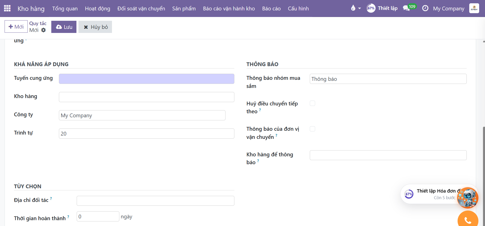
- 4
Danh mục lưu kho
Khai báo danh mục phân loại các vị trí lưu kho.
Các bước thực hiện
- 1
- 2Điền thông tin danh mục và Sức chứa theo Sản phẩm
Trường thông tin Diễn giải Danh mục lưu kho Tên danh mục lưu kho (VD: Pallet 1, Pallet 2). Khối lượng tối đa Giới hạn khối lượng hàng tối đa có thể lưu trong danh mục này (0 = không giới hạn). Cho phép sản phẩm mới Điều kiện cho phép thêm sản phẩm mới vào vị trí thuộc danh mục: - Nếu vị trí trống — chỉ thêm khi vị trí chưa chứa hàng gì.
- Cho phép phối trộn sản phẩm — cho phép nhiều sản phẩm khác nhau cùng lưu tại một vị trí.
Công ty Công ty áp dụng danh mục (để trống = áp dụng cho tất cả công ty). Tại tab Sức chứa theo Sản phẩm, bấm Thêm một dòng để giới hạn số lượng tối đa cho từng sản phẩm cụ thể được lưu trong danh mục (VD: Bình Sữa KM Nhựa PPSU 300ml (M) — 1.000 Cái). Bấm biểu tượng thùng rác để xóa dòng không cần dùng.
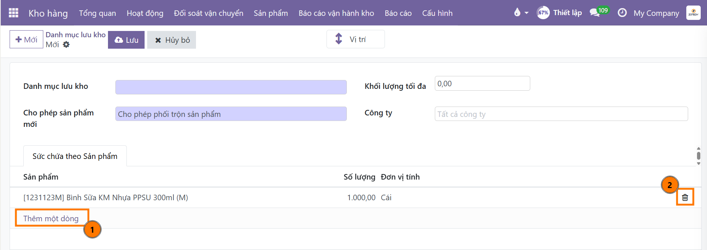
- 3
Quy tắc lưu kho
Thiết lập quy tắc sắp xếp và lưu trữ hàng hóa trong kho.
Các bước thực hiện
- 1
- 2Khai báo quy tắc trực tiếp trên dòng mới
Một dòng nhập liệu mới xuất hiện ngay trong danh sách — điền các trường:
Trường thông tin Diễn giải Khi hàng tới Điều kiện vị trí nguồn để kích hoạt quy tắc (VD: ASSET). Sản phẩm / Danh mục sản phẩm Giới hạn quy tắc chỉ áp dụng cho sản phẩm hoặc danh mục sản phẩm cụ thể (để trống = áp dụng Tất cả sản phẩm/danh mục). Lưu vào Vị trí đích mà hàng sẽ được lưu khi thỏa điều kiện (VD: ASSET). Vị trí phụ Cách chọn vị trí phụ cụ thể bên trong vị trí đích (VD: Không, Được sử dụng cuối cùng). Có danh mục Giới hạn quy tắc theo danh mục lưu kho đã khai báo (VD: Pallet 2). Công ty Công ty áp dụng quy tắc. 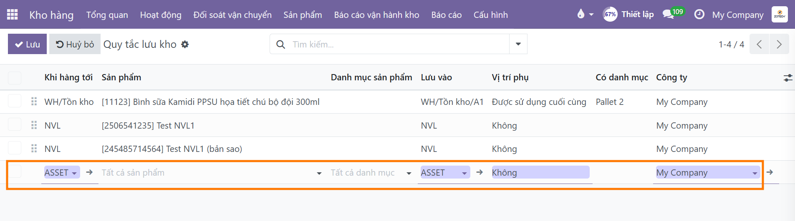
- 3
Danh pháp mã vạch
Khai báo quy tắc đặt mã vạch cho sản phẩm và đơn vị đóng gói.
Các bước thực hiện
- 1
- 2Điền thông tin và thêm Quy tắc mã vạch
Trường thông tin Diễn giải Danh pháp mã vạch Tên danh pháp. Chuyển đổi UPC/EAN Quy tắc tự động chuyển đổi giữa 2 chuẩn mã vạch khi tìm kiếm/quét: - Không bao giờ — không tự chuyển đổi, chỉ khớp đúng chuẩn đã quét.
- EAN-13 sang UPC-A — tự chuyển mã EAN-13 về UPC-A để tìm kiếm.
- UPC-A sang EAN-13 — tự chuyển mã UPC-A về EAN-13 để tìm kiếm.
- Luôn luôn — tự chuyển đổi hai chiều giữa EAN-13 và UPC-A.
Là danh pháp GS1 Đánh dấu nếu danh pháp này tuân theo chuẩn mã vạch GS1. Tên quy tắc / Loại / Mã hoá / Mẫu mã vạch Bấm Thêm một dòng để khai báo từng quy tắc. Mẫu mã vạch dùng biểu thức chính quy để nhận diện tiền tố và mã hoá phần giá trị số: - {NNN} — đánh dấu vị trí mã hoá một giá trị số nguyên (VD: cân nặng, số lượng).
- {NNNDD} — đánh dấu vị trí mã hoá giá trị số có phần thập phân, với
Dlà các chữ số sau dấu phẩy (VD: giá tiền có 2 số lẻ).
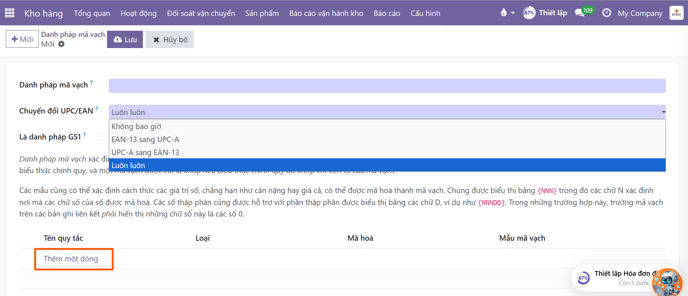
- 3
Vai trò Công việc
Khai báo các vai trò công việc trong kho (nhập hàng, xuất hàng, kiểm kê...).
Các bước thực hiện
- 1
- 2Khai báo Tên vai trò và Loại công việc
Một dòng nhập liệu mới xuất hiện ngay trong danh sách — nhập Tên vai trò (VD: Nhân viên khắc laser) và chọn Loại công việc tương ứng từ danh sách sổ xuống (VD: Pick hàng, Đóng gói, Bốc xếp, Khắc Lazer, Dán tem).
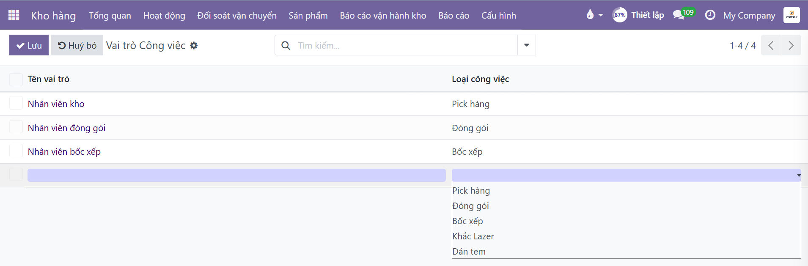
- 3
Phân công Công việc
Thiết lập phân công nhân sự phụ trách từng công việc trong kho.
Các bước thực hiện
- 1
- 2Khai báo nhân viên và vị trí công việc
Một dòng nhập liệu mới xuất hiện ngay trong danh sách — điền các trường:
Trường thông tin Diễn giải Mã nhân viên Mã định danh duy nhất của nhân viên trong hệ thống, dùng để tra cứu và tránh nhầm lẫn khi trùng tên (VD: DC0001). Tên nhân viên Họ tên đầy đủ của nhân viên được phân công phụ trách công việc trong kho. Kho phụ trách Kho cụ thể mà nhân viên được phân công làm việc — một nhân viên chỉ gắn với một kho tại một dòng phân công (VD: Kho Cầu Bươu). Vị trí công việc Một hoặc nhiều vai trò công việc được gán cho nhân viên, lấy từ danh sách đã khai báo tại Vai trò Công việc — quyết định nhân viên này xuất hiện ở khâu nào khi phân bổ công việc thực tế: - Nhân viên kho — phụ trách các tác vụ chung trong kho (pick hàng).
- Nhân viên đóng gói — phụ trách đóng gói hàng hóa trước khi xuất kho.
- Nhân viên bốc xếp — phụ trách bốc xếp, vận chuyển hàng trong kho.
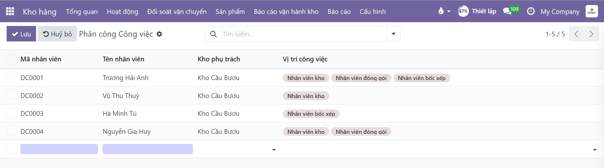
- 3
Quy cách kiện hàng
Khai báo các quy cách đóng gói kiện hàng (kích thước, trọng lượng).
Các bước thực hiện
- 1
- 2Điền thông tin quy cách và Chi tiết sản phẩm
Trường thông tin Diễn giải Mã quy cách Mã định danh của quy cách kiện hàng. Loại quy cách Phân loại quy cách đóng gói. Tên quy cách Tên gọi của quy cách kiện hàng. Số point Điểm quy đổi tương ứng với quy cách này (dùng để tính công/khối lượng công việc). Tab Chi tiết Bấm Thêm một dòng để khai báo từng sản phẩm thuộc quy cách: - Chọn Sản phẩm.
- Nhập Số lượng.
- Chọn Loại quy cách.
- Nhập Số point tương ứng.
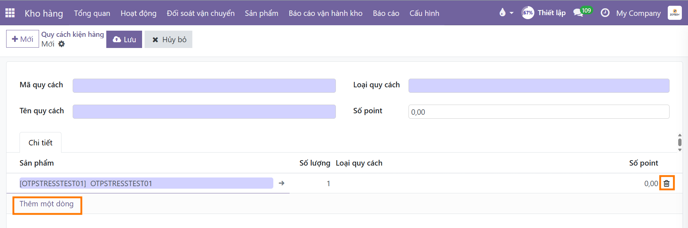
- 3
Danh sách Shipper
Quản lý danh sách nhân viên/đối tác giao hàng.
Các bước thực hiện
- 1
- 2Điền thông tin Shipper
Trường thông tin Diễn giải Tên Shipper Họ tên của shipper. Mã shipper Mã định danh, hệ thống tự sinh sau khi lưu. Ngày sinh / Giới tính Thông tin cá nhân của shipper. Email / Số điện thoại / Địa chỉ / CCCD-CMND Thông tin liên hệ và định danh của shipper. Hình ảnh Ảnh đại diện hoặc ảnh giấy tờ của shipper. Tỉnh/TP phụ trách Khu vực địa lý shipper phụ trách giao hàng. Kho hàng phụ trách Kho mà shipper nhận hàng để giao. Hạn mức công nợ Giới hạn số tiền COD tối đa shipper được giữ trước khi phải đối soát. Hạn mức còn lại Hệ thống tự tính phần hạn mức công nợ chưa sử dụng. Giao hàng tối đa Thời gian tối đa (phút) cho một lượt giao hàng. 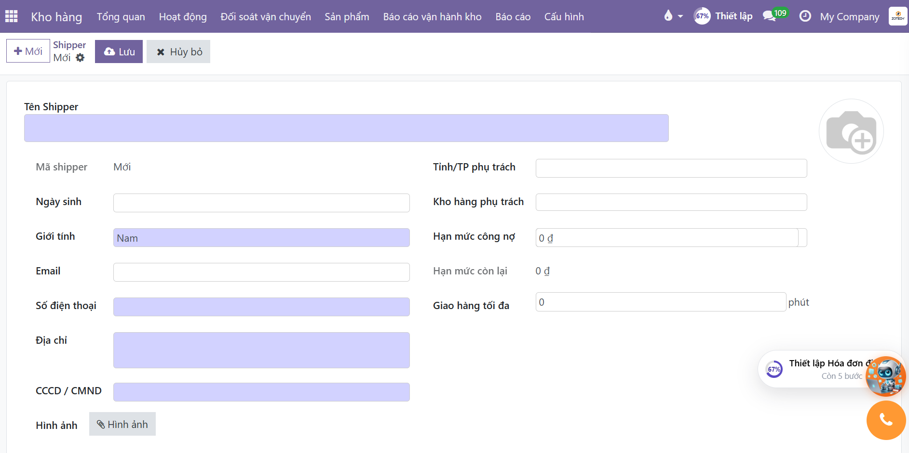
- 3Xem tab Đối soát vận chuyển
Sau khi shipper phát sinh giao dịch, tab Đối soát vận chuyển hiển thị danh sách đơn bán hàng shipper đã giao:
- Đơn bán hàng (ID), Mã CPN.
- Công ty MKT, Công ty Sale, Kho hàng.
- Hình thức giao, Ngày vận chuyển.
- Trạng thái đơn bán/vận chuyển, Tiền tệ, Tổng tiền.
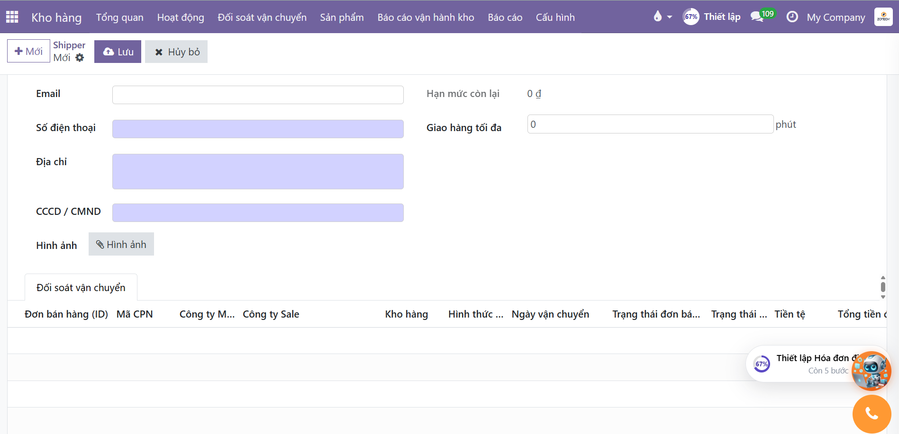
- 4
Phương thức giao hàng
Khai báo các phương thức giao hàng áp dụng cho đơn xuất kho.
Các bước thực hiện
- 1
- 2Điền thông tin chung và chi phí
Trường thông tin Diễn giải Phương thức giao hàng Tên phương thức (VD: UPS Express). Trang web Giới hạn phương thức chỉ áp dụng cho một trang web bán hàng cụ thể. Nhà cung cấp Đơn vị vận chuyển thực hiện giao hàng (VD: Viettel Post, GHTK, BEST, J&T, SPX...). Cấp độ tích hợp Mức độ kết nối API với đơn vị vận chuyển: Lấy đánh giá — chỉ lấy phí ước tính; Nhận tỷ lệ và tạo lô hàng — vừa lấy phí vừa tạo vận đơn thực tế. Công ty / Tuyến cung ứng Công ty và tuyến cung ứng áp dụng phương thức. Phí theo tỷ lệ Phần trăm phí tính thêm trên giá trị đơn hàng. Phí bổ sung Khoản phí cố định cộng thêm cho mỗi đơn. Miễn phí nếu giá trị đặt hàng lớn hơn Ngưỡng giá trị đơn hàng để được miễn phí vận chuyển. Sản phẩm phí giao hàng Sản phẩm dịch vụ dùng để ghi nhận phí giao hàng trên hóa đơn. Chính sách xuất hóa đơn Cách tính phí ghi trên hóa đơn: Phí dự tính — theo mức phí đã ước tính trước; Chi phí thực tế — theo chi phí vận chuyển thực tế phát sinh. - 3
- 4
- 5
Tiền tố mã bưu chính
Thiết lập tiền tố mã bưu chính theo khu vực giao hàng.
Các bước thực hiện
- 1
- 2
- 3